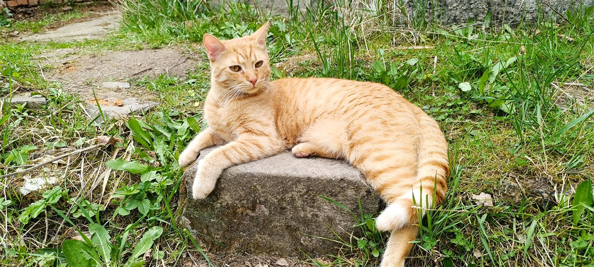

Felis Noetica
Chováme evropské krátkosrsté kočky.
Vybíráme je na povahu a chytrost.
Chováme evropské krátkosrsté kočky.
Vybíráme je na povahu a chytrost.
Kočky u nás chodí na procházky.

Chovám kočky v Brně a v Runářově na Konicku. Nejsou to kočky do soutěží krásy — vybírám je podle povahy: podle toho, jak jsou klidné, zvědavé a jak vycházejí s člověkem.
Začalo to jednou kočkou, která byla jiná než ostatní.
Chodila se mnou večer na procházky, kilometr a půl kolem vesnice, sama od sebe a bez vodítka. Lovila myši a já jí u toho fandil. Spávala opřená zezadu o monitor.
Byla klidná způsobem, jaký jsem u kočky nepotkal. Nebála se lidí ani psů, nepanikařila, na cizí věci se chodila podívat. Napadlo mě, že by taková povaha neměla zmizet — a tak jsem se pustil do chovu.
Jednou večer vyšla ven a nevrátila se. Nevím, co se stalo. Zůstalo po ní pět koťat a tenhle chov.

U koťátka z inzerátu je povaha loterie. U plemenné kočky šlechtěné na vzhled je taky loterie — jen k ní dostanete předvídatelný exteriér. Tady vybírám jedinou věc, a to je povaha. Nic jiného.
V praxi to znamená kočku, která nepanikaří u veterináře a snese cestu autem. Která se v novém domově srovná za pár dní — Zen a Aténa to zvládli oba bez jediného problému. Kterou unesou děti a ona unese je. Která nedrásá nábytek z úzkosti, protože žádnou nemá.
A znamená to kočku, která se nebojí vyjít ven ve vaší společnosti. Ne že by šla za vámi jako pes — spíš vás vezme s sebou.
Celá druhá generace si chce se psy hrát. Ne jedno kotě, všchna. To u koček obvyklé není.
Mám doma čtyři kočky a ani jeden škrábanec. U předchozích koček jsem býval rozdrásaný pořád.

Největší z vrhu, a byl největší od prvního dne. Nejmazlivější kocour, jakého jsem měl — chodí ke každému a nikoho se nebojí. Když na něj jiná kočka zasyčí, nikdy to neopětuje; spíš je z toho smutný a nechápe proč.
Nechá se nosit, což u koček moc nebývá. Občas přijde a chce vzít do náruče. Nejspíš to začalo v kuchyni, kde jsme lovili mouchy: držel jsem ho a zvedal k těm, co seděly vysoko na zdi, a on je odtamtud plašil tlapkou.
Chodí se mnou na večerní procházky až na kraj vesnice, kam sám nikdy nechodí — kočky mají procházky rády, když jdete s nimi. Jste jejich instantní bezpečí. Sibyle kdysi ukradl ulovenou myš.

První dva měsíce byla z vrhu nejpodnikavější a nebála se ničeho. Pak se to nějak obrátilo: dnes je tichá a hledí si svého. Nosit se nechá chvilku, když má náladu.
Občas ji něco napadne a pak mi to dlouho vysvětluje. Je zjevně nespokojená, že jí nerozumím.
Když jsem letos v červenci vážil její první koťata, jedno začalo pištět. Přiběhla, vzala mi ho z ruky a odnesla v zubech za zátylek zpátky do bedničky. Nepoškrábala mě ani potom, když jsem ji zvedl i s kotětem v puse a odnesl je oba nazpět.

Nejmenší z vrhu, a zpočátku jsem si kvůli tomu říkal, že ji do chovu asi nevezmeme. Nejmenší zůstala dodnes — jenže časem se z ní stala ta podnikavější z obou sester, veselá a pořád někde. Hned po Sokratovi se mě drží nejvíc ona.
Hranice si hlídá bez paniky a nikdy z ničeho nedělá drama. Výborná lovkyně.

Tohle je to nejdůležitější, co jsem se za celou dobu naučil, a nenaučil jsem se to hned. Dřív jsem to dělal jinak a poznal jsem to až přes vlastní chyby.
Na kočku se nekřičí. Pro kočku je trest už zvýšený hlas — nespojí si ho s tím, co provedla, spojí si ho s vámi. Nenaučí se, co nemá dělat; naučí se, že člověk je nevypočitatelný. A pak z toho vzniká všechno, čemu lidé říkají problémové chování.
Kočka není pes, aby se vychovávala a kladly se jí mantinely. A právě proto nemá ani potřebu zkoušet, co si dovolit může a co ne.
Nejpřekvapivější na tom je, jak je to snadné — pro obě strany. Nemusíte být důsledný, nemusíte nic hlídat, nemusíte trestat a pak litovat. Odpadne celá jedna vrstva práce a s ní i stres, který k ní patří. Přísnost je dřina. Laskavost je úspora.
U nás se na kočky nekřičí a rád bych, aby to tak zůstalo i potom.
V Brně jsou doma a ven nechodí. V Runářově mají zahradu, dřevník s automatickými krmítky, vyhřívané dečky na zimu a kamery. Doprava tam prakticky žádná není a ze záznamů víme, že se tam kočky dožívají vysokého věku i venku.
Do dřevníku chodí i kočky od sousedů. Je tam řada misek jako švédský stůl.
A ta procházka, o které je řeč nahoře, vypadá jinak, než si lidé představují. Nejdete vy a kočka za vámi — jdete vy tam, kam jde ona. Vede vás od stromu ke keři, svým tempem a svou trasou, a pak využije toho, že jste u ní, a přejde volné prostranství, na které by si sama netroufla. Jste jí krytím. A když se jí zrovna nechce, nikam nejde a je to tak správně. Vodítko jsme zkoušeli a zavrhli; kdo chce jít s kočkou na procházku, musí jít na její procházku.
Kdo chce kočce rozumět, musí se naučit její rozvrh: po poledni se spí, za soumraku loví, v noci se dějí věci, do kterých nám nic není. Přizpůsobit se dá jedině tomu, kdo to má stejně — a kočka to stejně mít nebude.
Střídání městského bytu a venkovské půlvolnosti pokládám za rozumný kompromis. Kdo si kotě nechá doma, nevadí mi to — kočka to unese, když má dost jiných podnětů. Kdo ho pustí ven, ať ví, co dělá: Šipka chodila ven a jednou se nevrátila.
Pro výběr uvnitř vrhu žádnou absolutní stupnici nepotřebuju. Porovnávám koťata stejného věku z téže sezóny a nechávám si ta, která se opakovaně chovají tak, jak si přeju: klidně, zvědavě, vstřícně, bez zbytečné agrese. Tak se ostatně srovnávají zvířata v každém chovu — proti vrstevníkům, ne proti ideálu.
Na otázku, jestli se chov jako celek někam posouvá, to ale nestačí, protože každá generace se pak měří jen sama proti sobě. K tomu je měřítko potřeba a budujeme ho: standardizované hodnocení chování už používáme, další metody zkoušíme. Podrobněji o tom píšu na stránce o chovu.
Do chovu si nechávám dvě kočky a jednoho kocoura. Rozhoduje výhradně chování a nic jiného do toho nevstupuje — jakmile by začaly rozhodovat vedlejší ohledy, přestal by výběr mířit tam, kam má, a celé by to ztratilo smysl. Že jsou zrovna tři, není nález, ale rozpočet: čtyři chovná zvířata už by se neuživila, dvě by byla riskantně málo.
Rozdíly, o které při tom jde, jsou jemné. Vybírá se mezi klidnými kočkami.
Inteligencí přitom myslím to, co jako inteligenci vnímáme: vyrovnanost, otevřenost, soustředění, dobrou náladu. Je to praktická definice, ne filozofická.
Že je povaha koček dědičná, není můj nápad. U psů to nikoho nepřekvapí — border kolie shání ovce a retrívr aportuje, a není to výcvik. U koček se to zkoumalo málo, protože se sto padesát let šlechtily hlavně na vzhled. První velká práce o dědičnosti kočičí povahy vyšla v roce 2019 v Scientific Reports: tým Helsinské univerzity vyhodnotil dotazníky k 5 726 kočkám a našel dědičné rozdíly v aktivitě, plachosti, sociabilitě i agresivitě napříč devatenácti plemeny.
Pracuji s běžnými optimalizačními postupy, jaké roky používáme v softwaru. Mají tu jen jiné názvy proměnných.
A co se od toho čeká? Že se každá generace o kousek posune — míň strachu z nového, rychlejší zvykání na změnu, víc zájmu o člověka a srozumitelnější dorozumívání. Ne skokem a ne u každého jednotlivého kotěte, nýbrž pomalu a v průměru. Jak daleko se tím dá dojít, neví nikdo, protože to u koček nikdo nezkoušel. To je na tom to zajímavé.
Chovná kočka u nás nezůstává do vysokého věku a není to laskavost, nýbrž součást postupu. Chov jde po generacích: jakmile nastoupí další, předchozí kastrujeme a jde do vlastního domova. Kdyby se chovala dál, táhla by populaci zpátky — a smysl celé věci je posouvat ji dopředu.
Sofie i Sibyla tedy časem půjdou kastrované do svých domovů. Dospělá, klidná, vyrovnaná kočka je pro spoustu lidí lepší volba než kotě, jen se málokdy nabízí.
Sokrates zůstane u mě. Je na mě moc navázaný a nikam jinam nechce.
Vrh Sibyla · 14. července 2026


Amálie
kočka — Amalie Emmy Noetherová — teorém spojující symetrie a zákony zachování
AMÁLIE · VOLNÁ →
Angelina
kočka — Fanny Angelina Hesseová — agar pro kultivaci bakterií a rozvoj mikrobiologie
ANGELINA · VOLNÁ →Vrh Sofie · 27. července 2026


Penrose
kocour — Sir Roger Penrose OM FRS — černé díry, Penroseovo dláždění, Nobelova cena 2020
PENROSE · VOLNÝ →
Priyamvada
kočka — Priyamvada Natarajanová — mapování temné hmoty gravitačními čochtami (Yale)
PRIYAMVADA · VOLNÁ →
Vidět je můžete mnohem dřív; na tom se domluvíme. Část si necháváme do dalšího chovu a rozhodne se to během několika týdnů, takže konkrétní kotě zatím nezamlouvám.
Zbylá koťata hledají domov.
info@felisnoetica.cz
604 761 154
Ozvěte se a dám vědět, jakmile bude jasno — přihlášeným nejdřív.
Koťat je dohromady zhruba osm za sezónu. Nejméně tři si nechávám do dalšího chovu, zbytek prodávám. Je to malý chov a bude malý i dál.
Koťata odcházejí nejdřív ve čtrnácti týdnech, plně naočkovaná proti panleukopenii, kaliciviróze a herpesviróze, odčervená, čipovaná a zaregistrovaná, s veterinární dokumentací, doklady o původu a kupní smlouvou. Čtrnáct týdnů není náš rozmar — je to minimum, které předepisují chovatelská pravidla FIFe, a mladší kotě od matky neodchází.
Matka je vždy vyšetřená kompletním genetickým panelem a její zprávu dostanete v plném znění i s kódem, kterým si ji sám ověříte v laboratoři. U recesivně dědičných chorob to stačí: kotě po zdravé matce může být nanejvýš přenašeč, nemocné být nemůže, protože jednu zdravou alelu má jistou od ní.
Otec bývá někdy kocour zvenčí, kterého nevlastníme a testovat ho nemůžeme. Kde je otcem naše zvíře, dostanete zprávy obě.
Průkaz původu podle plemenného standardu ke koťatům nevydáváme. Na výstavách se totiž posuzuje vzhled — třída pro chytrost neexistuje. Certifikoval by tedy přesně to jediné, na co tady nešlechtíme, a vaší kočce by k ničemu nebyl.
Místo něj dostanete doloženou genetiku obou rodičů, generační strom a kompletní dokumentaci. O zdraví a povaze vašeho kotěte to řekne nesrovnatelně víc než seznam předků.
Kotě do dalšího chovu prodávám rád a je to záměr, ne ústupek. Samostatná linie vedená někým jiným snižuje riziko, které dnes leží celé v jednom bytě, a rozšiřuje základnu, ze které se vybírá. Kdo chce pokračovat po svém, dostane k tomu i metodiku a rád mu poradím.
Jednu věc přitom řeknu rovnou, i když mě to připraví o polovinu obchodu: pár z mých současných vrhů by byl na začátek nové linie zbytečně příbuzný. Obě kočky i kocour pocházejí od téže zakladatelky, takže koťata jsou si navzájem bratranci. Pro vlastní chov je lepší vzít ode mě jedno zvíře a najít k němu nepříbuzného partnera jinde — přesně to sám dělám s kocourem z Runářova. Linie pak má moji selekci i vlastní variabilitu a od začátku míří trochu jinam, což je celý smysl.
Zeptám se na pár věcí — kde bude kotě žít a jestli má být samo — ne abych někoho zkoušel, ale aby si kotě a člověk sedli. Pak už je to na vás; kočka je vaše a nebudu vám do ní mluvit.
Koťata bývají zamluvená dopředu.
info@felisnoetica.cz
604 761 154
Napište nebo zavolejte a dám vědět, až budou koťata.
Felis Noetica
INTELLIGENTIA ET CONCORDIA
Chystám o těchhle kočkách knížku — fotografie a příhody, nic odborného. Až bude hotová, dám ji sem ke stažení zdarma.